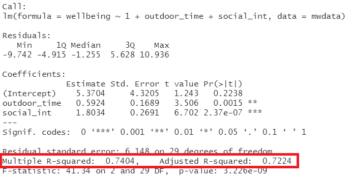
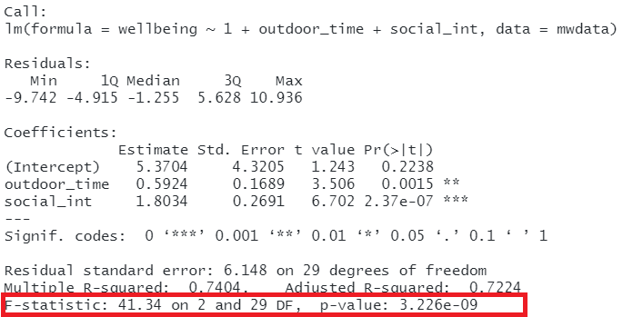

| outcome (y) | predictor (x) | regression | equivalent to |
|---|---|---|---|
| continuous | continuous | lm(y ~ x) | cor.test(x,y) |
| continuous | binary | lm(y ~ x) | t.test(y ~ x) |
8A: Multiple Linear Regression
The simple linear regression model with a single predictor - lm(y ~ x1) - is a useful introduction to the idea of model-based thinking, but it’s not clear how much benefit this gives us as it is actually equivalent to the basic statistical tests we have already seen.
The real power of regression models comes into effect when we start to concern ourselves with more than just “one outcome explained by one predictor”.
The Multiple Regression Model
Last week was all about “y predicted by x”.
This week, enter… x2.
We’re initially looking at the case of “one outcome, two predictors”, but the beauty of this is that the logic scales up to however many predictor variables we want.
When we fitted the regression model \(y = b_0 + b_1(x) + \epsilon\), we were fitting a line to a scatterplot of points that we plotted in 2 dimensions (an x-axis and a y-axis).
When we fit a regression model with two predictors, “y predicted by x1 and x2” (\(y = b_0 + b_1(x_1) + b_2(x_2) + \epsilon\)), we are fitting a plane (or “surface”) to a 3-dimensional cloud of datapoints (Figure 1).
The model is now determined by 3 numbers:
- the intercept, denoted \(b_0\).
This is the point at which the line hits the y-axis (i.e. where \(x_1=0\) and \(x_2=0\)) - the slope of x1, in this case denoted \(b_1\).
This is the angle of the regression plane with respect to the axis of \(x_1\). It is the amount which the plane increases for every 1 increase in \(x_1\).
- the slope of x2, in this case denoted \(b_2\).
This is the angle of the regression plane with respect to the axis of \(x_2\). It is the amount which the plane increases for every 1 increase in \(x_2\).

Don’t worry about trying to figure out how to visualise it if we had any more explanatory variables! We can only conceive of 3 spatial dimensions. One could imagine this surface changing over time, which would bring in a 4th dimension, but beyond that, it’s not worth trying! However, the logic stays the same when we increase this to having \(p\) predictors, but we are talking about a \(p\)-dimensional surface, and each coefficient is the angle of that surface with respect to each predictor.
So why is this a useful thing to do? How exactly are the coefficients from a multiple regression model different from those from a simple regression model?
Multiple Regression Coefficients
The benefit of multiple regression models is that it allows us to exercise statistical control.
if we have multiple predictor variables in our model, the coefficients we get out represent the association between the outcome and the bit of each variable that is unique from the other variables.
A common way to build this intuition is to consider a venn diagram with a circle showing the variance in each variable. The overlap between circles shows the covariance.
slr venn mlr venn cov x1 x2 = 0 mlr venn
Example: Caffeine Heart Rates
We have a sample of 100 people, and we measure their resting heart rate and their caffeine consumption. We’re interested in estimating how caffeine consumption is associated with differences in resting heart rate.
However, we also know that heart rate increases with age and we think that older people tend to drink less caffeine. So we want to isolate the differences in heart rate due to caffeine from those due to age.
Control on the front-end
If we haven’t collected the data yet, one option would be to control by design. We try to collect our data such that caffeine consumption is independent from age. We could do this by randomisation (randomly allocate people to different levels of caffeine consumption, meaning that the age should not be related to caffeine - this is what a “randomized control trial” does, randomly allocating people to take a drug or a placebo).
Alternatively, we could do achieve it by “case-matching” (easier when we are talking about 2 groups: e.g. for every 60 year old taking the drug, we also measure a 60 year old taking the placebo).
set.seed(38)
df <- tibble(
age = rdunif(100,40,80),
caffeine = 150 + age*-.8 + rnorm(100,0,5),
rhr = 56 + age*.3 + 0*caffeine + rnorm(100,0,5)
)
summary(lm(rhr ~ caffeine, data = df))$coefficients Estimate Std. Error t value Pr(>|t|)
(Intercept) 101.17457 5.34239607 18.938052 1.610622e-34
caffeine -0.25999 0.05270223 -4.933189 3.309000e-06summary(lm(rhr ~ age + caffeine, data = df))$coefficients Estimate Std. Error t value Pr(>|t|)
(Intercept) 41.83101855 16.0000237 2.614435 0.0103629152
age 0.39137193 0.1002531 3.903838 0.0001749053
caffeine 0.09330257 0.1030299 0.905587 0.3673983833The toy dataset for our heart rate and caffeine example is at [TODO LINK].
We can see plots of the different relationships in Figure 2. It looks from these like heart rate decreases with caffeine, and increases with age. But note also that caffeine decreases with age.

fit lm rhr ~ caff oh look, a nice line! significant. more caffeine is associated with lower heart rate!
but what if the reason that people in our sample who drink more caff have lower hr not because they drink more caff, but because they are older (and older people have lower hr).
The coefficient for the association between caffeine and heart rate when we also include age in as a predictor (lm(rhr ~ age + caffeine)), is no longer significant. Why? Because after we take into account how old people are, their caffeine consumption doesn’t actually provide any information about their heart rate.
This example is a very extreme one where the relationship completely disappears. in real data associations tend to be more subtle/less clear cut. Including a covariate \(x_2\) may increase or decrease the association between \(y\) and \(x_1\), depending on the extent to which \(x_1\) and \(x_2\) are correlated.
optional good bad control
line > surface if we have categorical, then line > two lines
fitting multiple regression models
lm
multiple categories = multiple regression
Model Evaluation
Adjusted \(R^2\)
We know from our work on simple linear regression that the R-squared can be obtained as:
\[ R^2 = \frac{SS_{Model}}{SS_{Total}} = 1 - \frac{SS_{Residual}}{SS_{Total}} \]
If we briefly return to the venn diagrams we used above, the \(R^2\) is capturing all variance in \(y\) that is explained by the predictors (including the overlapping bits between \(x_1\) and \(x_2\)).
TODO
r2 venn
However, when we add more and more predictors into a multiple regression model, \(SS_{Residual}\) cannot increase, and may decrease by pure chance alone, even if the predictors are unrelated to the outcome variable. Because \(SS_{Total}\) is constant, the calculation \(1-\frac{SS_{Residual}}{SS_{Total}}\) will increase by chance alone.
An alternative, the Adjusted-\(R^2\), does not necessarily increase with the addition of more explanatory variables, by including a penalty according to the number of explanatory variables in the model. It is not by itself meaningful, but can be useful in determining what predictors to include in a model.
\[ Adjusted{-}R^2=1-\frac{(1-R^2)(n-1)}{n-k-1} \\ \quad \\ \begin{align} & \text{Where:} \\ & n = \text{sample size} \\ & k = \text{number of explanatory variables} \\ \end{align} \]
In R, you can view the mutiple and adjusted \(R^2\) at the bottom of the output of summary(<modelname>):
TODO

Joint test
As in simple linear regression, the F-statistic is used to test the null hypothesis that all regression slopes are zero (it is just that now that we have multiple predictors, so “all” is more than 1).
\[ \begin{aligned} H_0: & \text{the model is ineffective, } \\ & b_1, ..., b_k = 0 \\ H_1: &\text{the model is effective, } \\ & \text{any of }b_1, ..., b_k \neq 0 \end{aligned} \]
The \(F\)-statistic is sometimes called the F-ratio because it is the ratio of the how much of the variation is explained by the model (per parameter) versus how much of the variation is unexplained (per remaining degrees of freedom).
We extend the formula for the \(F\)-statistic for simple regression to encompass situations where there are more predictors:
\[ \begin{align} & F_{df_{model},df_{residual}} = \frac{MS_{Model}}{MS_{Residual}} = \frac{SS_{Model}/df_{Model}}{SS_{Residual}/df_{Residual}} \\ & \quad \\ & \text{Where:} \\ & df_{model} = k \\ & df_{error} = n-k-1 \\ & n = \text{sample size} \\ & k = \text{number of explanatory variables} \\ \end{align} \]
In R, at the bottom of the output of summary(<modelname>), you can view the F ratio, along with an hypothesis test against the alternative hypothesis that the at least one of the coefficients \(\neq 0\) (under the null hypothesis that all coefficients = 0, the ratio of explained:unexplained variance should be approximately 1):
TODO

Model Comparisons
The \(F\)-statistic we see at the bottom of summary(model) is actually a comparison between two models: our model (with some explanatory variables in predicting \(y\)) and the null model. In regression, the null model can be thought of as the model in which all explanatory variables have zero regression coefficients. It is also referred to as the intercept-only model, because if all predictor variable coefficients are zero, then the only we are only estimating \(y\) via an intercept (which will be the mean: \(\bar y\)).
But we don’t always have to compare our model to the null model. We can compare it to all the intermediate models which vary in the complexity, from the null model to our full model.
If (and only if) two models are nested (one model contains all the predictors of the other and is fitted to the same data), we can compare them using an incremental F-test.
Incremental F-test
This is a formal test of whether the additional predictors provide a better fitting model.
Formally this is the test of:
- \(H_0:\) coefficients for the added/ommitted variables are all zero.
- \(H_1:\) at least one of the added/ommitted variables has a coefficient that is not zero.
In R, we can conduct an incremental F-test by constructing two models, and passing them to the anova() function: anova(model1, model2).
To fit the ‘null model’, we simply fit the model with only an intercept term, and no predictors. We can use the anova() function to compare this model with ours, and we will see that it matches the \(F\)-statistic at the bottom of the full model output.
TODO
Types of SS
todo borrow from explainer doc 2122?